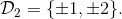
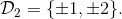
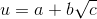
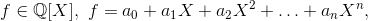
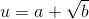
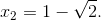
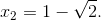

Rezolvarea ecuațiilor algebrice cu coeficienți în mulțimile de numere cunoscute
Teorema lui Abel-Ruffini (Teorema P38) afirmă că pentru ecuația algebrică de grad  nu există formule generale de rezolvare. Aceasta face ca rezolvarea unor astfel de ecuații să fie dificilă în lipsa unor informații suplimentare asupra ecuației.
nu există formule generale de rezolvare. Aceasta face ca rezolvarea unor astfel de ecuații să fie dificilă în lipsa unor informații suplimentare asupra ecuației.
De asemenea, corpul în care ecuația are coeficienți poate conduce la obținerea unor soluții particulare și astfel, rezolvarea ecuației să fie redusă la ecuații algebrice de grad inferior.
ECUAȚII ALGEBRICE CU COEFICIENȚI ÎNTREGI
Teorema P44: Coeficienți întregi
Fie o ecuație algebrică de gradul cu coeficienții
- Dacă este soluție a ecuației, atunci
 divide
divide - Dacă cu este soluție a ecuației date, atunci
 divide iar
divide iar  divide
divide
Exemplu:
Rezolvați în mulțimea  ecuația
ecuația
Rezolvare:
Căutăm soluțiile întregi ale ecuației printre divizorii lui  Avem 
Avem 
Alcătuim schema lui Horner pentru acești divizori:
 |  |  | |||
 | | este soluție | |||
| nu este soluție | ||||
 | | nu este soluție | |||
| nu este soluție |
Așadar s-a găsit soluția întreagă .
În acest caz, ecuația se scrie:
Soluțiile acestei ecuații sunt
ECUAȚII ALGEBRICE CU COEFICIENȚI RAȚIONALI
Fie astfel încât 0"> și
Definiția P45: Numere iraționale pătratice
Numerele reale de forma  se numesc numere iraționale pătratice.
Definiția P46: Conjugatul unui număr
Numărul irațional pătratic se numește conjugatul numărului .
Teorema P47: Coeficienți raționali
Fie  un polinom de gradul și  număr irațional pătratic.
Dacă  este rădăcină a polinomului
este rădăcină a polinomului  atunci:
atunci:
- este rădăcină a lui
- și au același ordin de multiplicitate.
Exemplu:
Rezolvați următoarea ecuație știind că admite soluția
Rezolvare:
Considerăm un polinom care admite rădăcina
Conform Teoremei P47: (Coeficienți raționali), ne rezultă că polinomul  admite și rădăcina 
admite și rădăcina 
Din relațiile lui Viète (Teorema P43) avem că .
Știm două rădăcini, rezultă că o putem afla pe cea de-a treia:
Așadar, polinomul nostru se poate scrie astfel: .
ECUAȚII ALGEBRICE CU COEFICIENȚI REALI
Teorema P48: Coeficienți reali
Fie ![f\in\mathbb{R}[X],](../media/webbooks/338/2263/images/equations/iid9x--y4ugljybsvwq7fa==.gif) un polinom de gradul
un polinom de gradul
Dacă este rădăcină a polinomului atunci:
-
 este rădăcină a polinomului
este rădăcină a polinomului - și au același ordin de multiplicitate.
Exemplu:
Să se rezolve ecuația știind că admite soluția
Rezolvare:
Fie , polinomul cu coeficienți reali atașat ecuației date.
Rezultă că  are rădăcina deci va avea și rădăcina (conform Teoremei P47: Coeficienți raționali).
are rădăcina deci va avea și rădăcina (conform Teoremei P47: Coeficienți raționali).
Din relațiile lui Viète (Teorema P43) avem că
Deci, cea de-a treia rădăcină a polinomului este:
Așadar, polinomul nostru se poate scrie astfel: